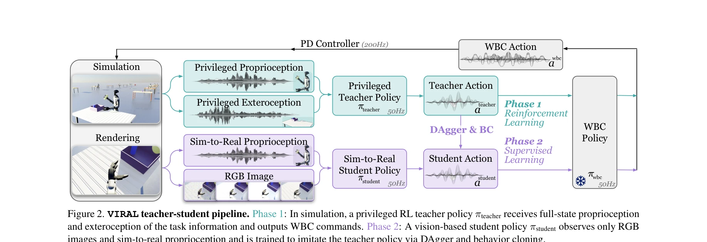
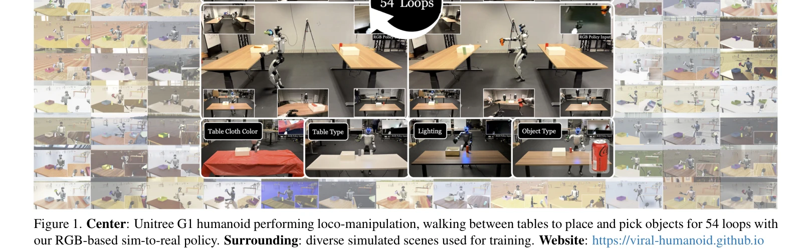

저자: Tairan He, Zi Wang, Haoru Xue, Qingwei Ben, Zhengyi Luo, Wenli Xiao, Ye Yuan, Xingye Da, Fernando Castañeda, Shankar Sastry, Changliu Liu, Guanya Shi, Linxi Fan, Yuke Zhu | 날짜: 2025-11-27 | DOI: 10.48550/arXiv.2511.15200

Figure 2. VIRAL teacher-student pipeline. Phase 1: In simulation, a privileged RL teacher policy πteacher receives full-
VIRAL은 humanoid robot의 loco-manipulation을 시뮬레이션에서 학습하고 zero-shot으로 실제 로봇에 배포하는 visual sim-to-real 프레임워크이며, teacher-student 구조와 대규모 GPU 컴퓨팅을 활용하여 RGB 기반 정책을 통해 54개 사이클의 연속적인 객체 이동을 달성했다.

Figure 1. Center: Unitree G1 humanoid performing loco-manipulation, walking between tables to place and pick objects for
Figure 2. VIRAL teacher-student pipeline. Phase 1: In simulation, a privileged RL teacher policy πteacher receives full-
총평: 본 논문은 humanoid loco-manipulation에 대한 시뮬레이션 기반 접근의 실현 가능성을 대규모 GPU 컴퓨팅과 체계적인 설계를 통해 실증한 중요한 연구로, teacher-student 프레임워크와 visual domain randomization의 조합이 zero-shot sim-to-real 전이를 가능하게 함을 보여준다.